Choose a service
Open its own checklist and required upload fields.
From Aadhaar and certificates to pensions, job forms and bill help—choose a service, see its own checklist and message Deep CSC on WhatsApp. We confirm the current portal fee before submitting your application.

Choose an option and message Deep CSC on WhatsApp: +91 94787 27562.
Select an application to see its own preparation list and upload fields. Portal requirements and official charges can change, so Deep CSC confirms them before filing.
Deep CSC is a local assistance service, not a government website. Eligibility, required proofs, processing time and official charges are confirmed with the relevant portal before an application is submitted.
Open its own checklist and required upload fields.
Review each JPG/PDF before sending it to Deep CSC.
We check the portal charge and Deep CSC service fee with you.
Payment options appear only after the application and final amount are approved.
Home visits within 10 km of Chhajli are free. Beyond 10 km, the travel charge is ₹20 per additional kilometre. Send your address and preferred time; Deep CSC confirms the visit on WhatsApp.
Deep CSC is based in Chhajli, Sunam, and helps nearby Punjab customers with online forms, identity cards, certificates, welfare schemes, job and admission forms, bill assistance, printing and scanning. We explain the steps, check the documents with you and confirm charges before starting.
Open 24 hours · Customer messages are handled on WhatsApp.
The fee list is Deep CSC’s working estimate based on the supplied rate notes. Government portal charges can change; the current amount is confirmed before payment.
After Deep CSC has reviewed the files and confirmed the final amount. The payment screen is not active until the approved quote and gateway are configured.
No. Files stay on your device until you choose a share app. Secure server storage is not connected in this preview.
Message +91 94787 27562 on WhatsApp. Deep CSC is at Chhajli, Sunam.